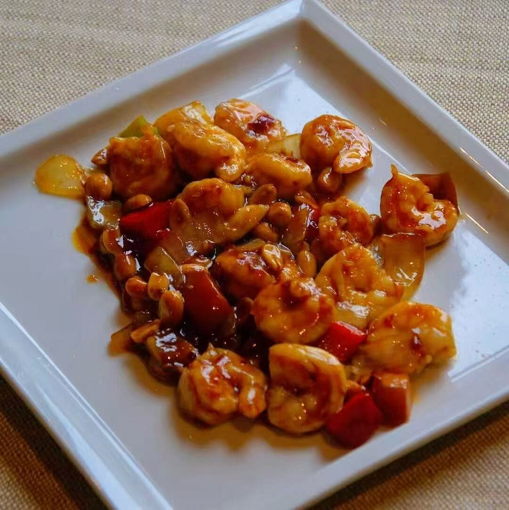
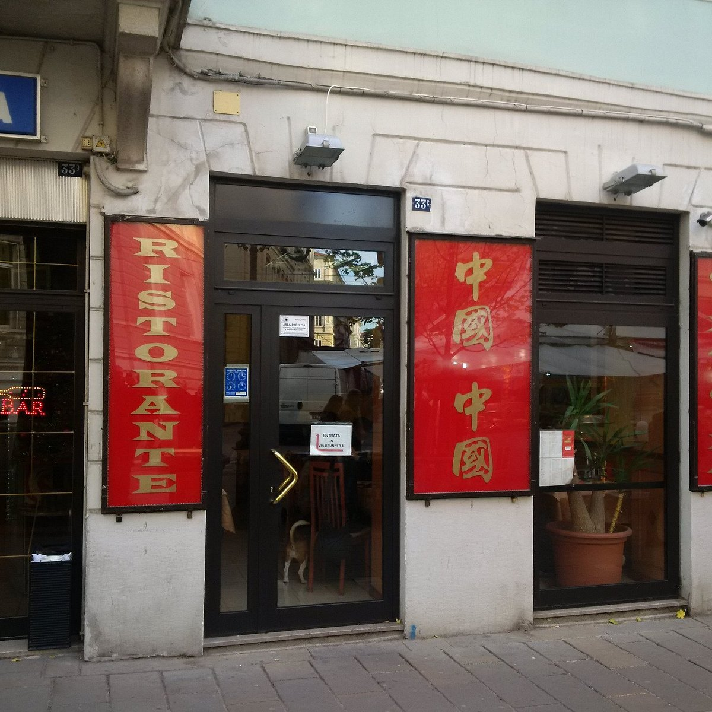
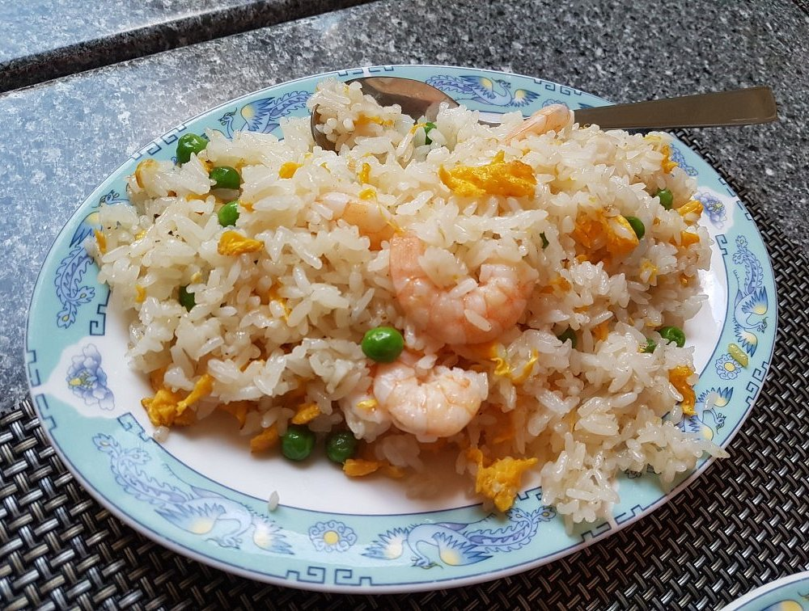
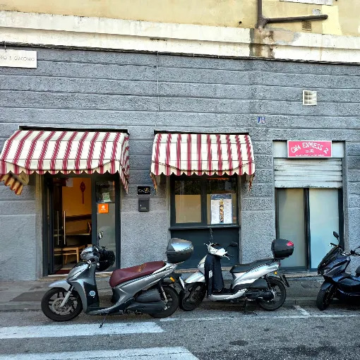
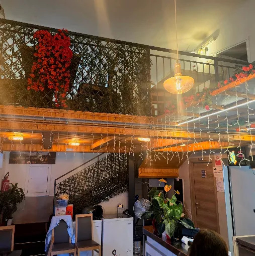

Migliori ristoranti cinesi a Trieste: la classifica
In questa classifica si sfidano due ristoranti cinesi storici, aperti da più di trent'anni, pertanto non è stato facile assegnare il primo posto.
- Grande Shanghai
Perché ho messo questo ristorante al primo posto?
Soltanto per la posizione. Il ristorante infatti si trova nella centralissima Piazza Venezia, sulle Rive. E' un'attività storica fondata nel 1994 e la proprietaria "Fiorellino" è molto conosciuta dai clienti abituali. Di fronte al ristorante c'è un parcheggio pubblico dove spesso si trova posto. Il prezzo è giusto.Critica costruttiva:
A causa del numero elevato di ordini delivery, i clienti in sala devono aspettare di più.Foto:

- Cina Cina
Perché ho messo questo ristorante al secondo posto?
Il ristorante si trova in Viale XX Settembre che, pur essendo una zona molto frequentata, non mi piace tanto quanto le Rive. Anche questo ristorante è storico, aperto dal 1987 e i gestori sono cordiali. Sconsiglio di andarci in auto perché si trova difficilmente parcheggio in zona. Tuttavia, ci sono molti bus che passano nelle vie limitrofe. Il prezzo è giusto.Critica costruttiva:
Alcune zone interne del ristorante potrebbero essere illuminate di più.Foto:


- Cina Express 2
Perché ho messo questo ristorante all'ultimo posto?
Premessa: questa attività è principalmente un ristorante "take away", anche se ci sono pochi (pochissimi) posti per consumare in loco. L'ultima volta che ci sono stato, sono rimasto sorpreso dalla possibilità di ordinare in forma "all you can eat". Non avendo mai ordinato cibo cinese in questa forma, ho deciso di provare. Purtroppo però, il cibo servito, seppur buono, era tutto fritto: anche i piatti che solitamente vengono preparati in altro modo, in questo ristorante sono stati serviti fritti.Critica costruttiva:
Avrei desiderato più chiarezza sul tipo di cottura dei piatti che ho ordinato.Foto:



Leggi anche:
Ristoranti giapponesi
Pizzerie